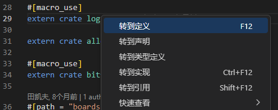

探索 cargo 的缓存
部分往届内核及运行指引 提到了 cargo 的离线编译与缓存。Rust 库具体会被 cargo 缓存到哪里呢？
打开我们前两个实验的 rCore-Tutorial 仓库，在 os/src/main.rs 找到 extern crate log 一行。绝大部分 IDE 都带有“跳转到定义”的功能（或者也可以直接在 ~/.cargo 下搜索），例如 vscode 的：

我们可以通过跳转或者搜索，去看 log 库的代码：
思考题1.1：这些代码具体在 ~/.cargo 下的哪个文件夹？
临时修改依赖库
找到第 1352 行左右的 set_logger 函数，我们在 rCore-Tutorial 初始化时会调用它。把第一行加个分号 ; ，然后加个 panic，也即改成：
pub fn set_logger(logger: &'static dyn Log) -> Result<(), SetLoggerError> {
set_logger_inner(|| logger);
panic!("123")
}
然后先 make clean 再 make run，可以看到我们的 panic 真的生效了。这意味着如果在 debug 时怀疑依赖库的输出，是可以直接在依赖库里修改的！比如你可以加一些 panic! assert! 这样的判断，或者修改代码的运行逻辑。一般来说你无法在依赖库中 println! 但可以通过向 panic! 传递字符串来实现近似的输出效果。
无论如何，修改依赖库的代码是一件危险的事情。当需要恢复这些修改，可以把代码改回去，也可以直接删掉整个 log 仓库，因为这些仓库只是“缓存”，下次编译时 cargo 还会自动从网络拉取的。当然，别忘了先 make clean 再 make run。
思考题1.2：如果忘记 make clean 会发生什么？
如果你真的需要修改依赖库
一般来说，我们只会通过这种方式检查依赖库运行的逻辑，以辅助寻找内核中的 bug。如果它本身存在 bug 或者缺少你需要的功能，最好的办法是克隆它的 git 项目，修改后向原作者提出 pull request。或者至少也需要像上一节提到的离线编译那样，在内核项目下开一个类似 dependencies/ 的目录，把对这个模块的依赖变成本地依赖。